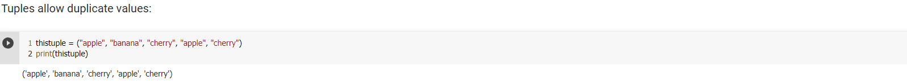

List and Tuple
Python Lists
List
Lists are used to store multiple items in a single variable.
Lists are one of 4 built-in data types in Python used to store collections of data, the other 3 are Tuple, Set, and Dictionary, all with different qualities and usage.
Lists are created using square brackets:
List items are ordered, changeable, and allow duplicate values.
List items are indexed, the first item has index [0], the second item has index [1] etc.
Ordered
When we say that lists are ordered, it means that the items have a defined order, and that order will not change.
If you add new items to a list, the new items will be placed at the end of the list.
Changeable
The list is changeable, meaning that we can change, add, and remove items in a list after it has been created.
Allow Duplicates
Since lists are indexed, list can have items with the same value:
List Length
To determine how many items a list has, use the len() function:
List Items-Data Types
List items can be of any data type:
A list with strings, integers and boolean values:
type()
From Python's perspective, lists are defined as objects with the data type 'list':
The list() Constructor
It also possible to use the list() constructor when creating a new list.

Access List Items
Access Items
List items are indexed and you can access them by referring to the index number:
Negative indexing means start from the end -1 refers to the last item, -2 refers to the second last item etc.
Range of Indexes
You can specify a range of indexes by specifying where to start and where to end the range.
When specifying a range, the return value will be a new list with the specified items.
Range of Negative Indexes
Specify negative indexes if you want to start the search from the end of the list:
Change Item Value
To change the value of a specific item, refer to the index number:
Change a Range of Item Values
To change the value of items within a specific range, define a list with the new values, and refer to the range of index numbers where you want to insert the new values:
Join Two List
There are several ways to join, or concatenate, two or more lists in Python.
One of the easiest ways are by using the + operator.
Check if Item Exits
To determine if a specified item is present in a list use the in keyword:
List Methods
Insert Items
To insert a new list item, without replacing any of the existing values, we can use the insert() method.
The insert() method inserts an item at the specified index:
To add an item to the end of the list, use the append() method:
Extend List
To append elements from another list to the current list, use the extend() method.
Remove Specificed Item
The remove() method removes the specified item.
Remove Specified Index
The pop() method removes the specified index.
If you do not specify the index, the pop() method removes the last item.

The del keyword also removes the specified index:
The del keyword can also delete the list completely.
Clear The List
The clear() method empties the list.
The list still remains, but it has no content.
Sort List Alphanumerically
List objects have a sort() method that will sort the list alphanumerically, ascending, by default:
- Sort Descending
To sort descending, use the keyword argument reverse = True:
- Customize Sort Function
You can also customize your own function by using the keyword argument key = function.
The function will return a number that will be used to sort the list (the lowest number first):
- Case Insensitive Sort
By default the sort() method is case sensitive, resulting in all capital letters being sorted before lower case letters:
Luckily we can use built-in functions as key functions when sorting a list.
So if you want a case-insensitive sort function, use str.lower as a key function:
What if you want to reverse the order of a list, regardless of the alphabet?
The reverse() method reverses the current sorting order of the elements.
Copy a List
You cannot copy a list simply by typing list2 = list1, because: list2 will only be a reference to list1, and changes made in list1 will automatically also be made in list2.
There are ways to make a copy, one way is to use the built-in List method copy().
List Comprehension
Loop Through a List
You can loop through the list items by using a for loop:
You can also loop through the list items by referring to their index number.
Use the range() and len() functions to create a suitable iterable.
Using a While Loop
You can loop through the list items by using a while loop.
Use the len() function to determine the length of the list, then start at 0 and loop your way through the list items by referring to their indexes.
Remember to increase the index by 1 after each iteration.
The Syntax
newlist = [expression for item in iterable if condition == True]
- Condition
The condition is like a filter that only accepts the items that valuate to True.
The condition if x != "apple" will return True for all elements other than "apple", making the new list contain all fruits except "apple".
The condition is optional and can be omitted:
- Iterable
The iterable can be any iterable object, like a list, tuple, set etc.
- Expression
The expression is the current item in the iteration, but it is also the outcome, which you can manipulate before it ends up like a list item in the new list:
Python Tuples
Tuple
Tuples are used to store multiple items in a single variable.
Tuple is one of 4 built-in data types in Python used to store collections of data, the other 3 are List, Set, and Dictionary, all with different qualities and usage.
A tuple is a collection which is ordered and unchangeable.
Tuples are written with round brackets.
Tuple items are ordered, unchangeable, and allow duplicate values.
Tuple items are indexed, the first item has index [0], the second item has index [1] etc. Ordered
When we say that tuples are ordered, it means that the items have a defined order, and that order will not change. Unchangeable
Tuples are unchangeable, meaning that we cannot change, add or remove items after the tuple has been created. Allow Duplicates
Since tuples are indexed, they can have items with the same value:
 Tuple Length
To determine how many items a tuple has, use the len() function:
Create Tuple With One Item
To create a tuple with only one item, you have to add a comma after the item, otherwise Python will not recognize it as a tuple.
Tuple Items - Data Types
Tuple items can be of any data type:
A tuple can contain different data types:
 Type()
Type()From Python's perspective, tuples are defined as objects with the data type 'tuple':
The tuple() Constructor
It is also possible to use the tuple() constructor to make a tuple.
Access Tuple Items
Access Tuple Items
You can access tuple items by referring to the index number, inside square brackets:

Negative indexing means start from the end.
-1 refers to the last item, -2 refers to the second last item etc.
Range of Indexes
You can specify a range of indexes by specifying where to start and where to end the range.
When specifying a range, the return value will be a new tuple with the specified items.
Change Tuple Values
Once a tuple is created, you cannot change its values. Tuples are unchangeable, or immutable as it also is called.
But there is a workaround. You can convert the tuple into a list, change the list, and convert the list back into a tuple.
Add Items
Since tuples are immutable, they do not have a build-in append() method, but there are other ways to add items to a tuple.
1. Convert into a list: Just like the workaround for changing a tuple, you can convert it into a list, add your item(s), and convert it back into a tuple.
2. Add tuple to a tuple. You are allowed to add tuples to tuples, so if you want to add one item, (or many), create a new tuple with the item(s), and add it to the existing tuple:
Remove Items
Tuples are unchangeable, so you cannot remove items from it, but you can use the same workaround as we used for changing and adding tuple items:

Using Asterisk*
If the number of variables is less than the number of values, you can add an * to the variable name and the values will be assigned to the variable as a list:
Loop Through a Tuple
You can loop through the tuple items by using a for loop.
Loop Through the Index Numbers
You can also loop through the tuple items by referring to their index number.
Use the range() and len() functions to create a suitable iterable.
 Using a While Loop
Using a While LoopYou can loop through the list items by using a while loop.
Use the len() function to determine the length of the tuple, then start at 0 and loop your way through the tuple items by refering to their indexes.
Remember to increase the index by 1 after each iteration.
Multiply Tuples
If you want to multiply the content of a tuple a given number of times, you can use the * operator: